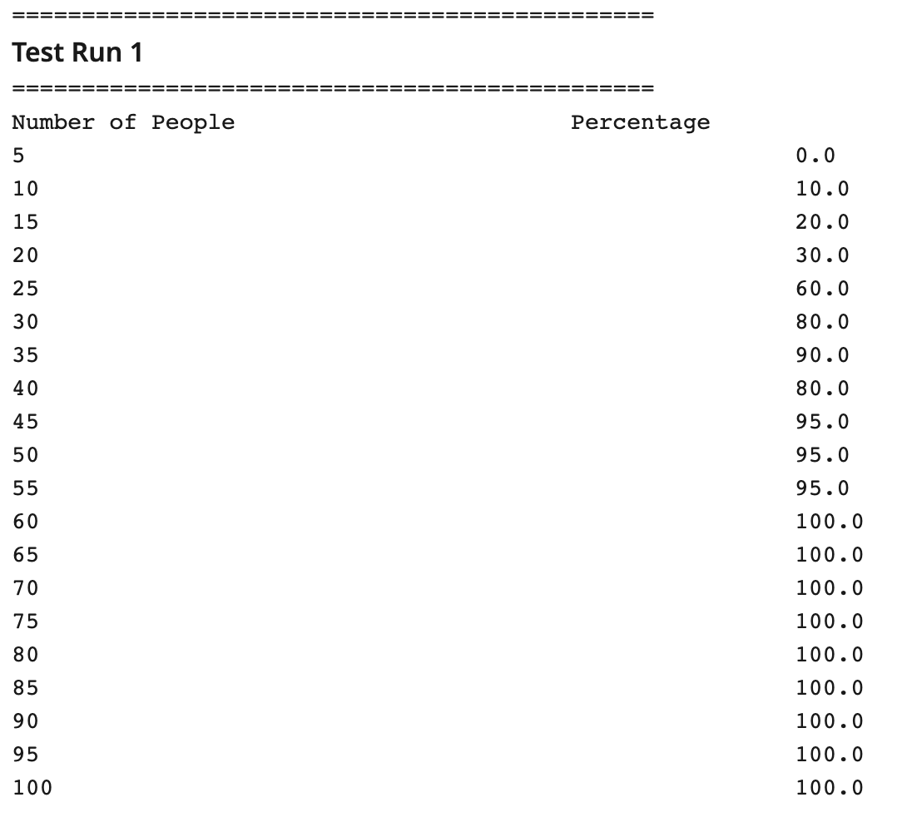
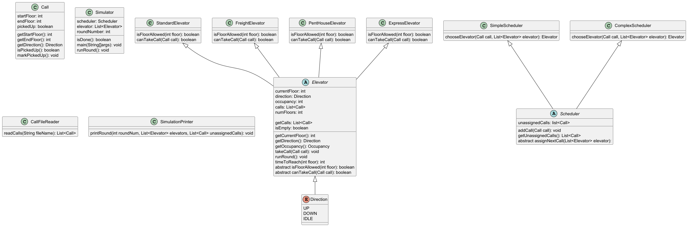

Hi, my name is Oriana! I'm originally from Venezuela, and I'm a third-year computer science student at the University of San Diego.
Outside of class, I work as an IT Intern at Mascot Factory, where I automate manual processes, like replacing hand-built monthly reports with automatic dashboards and turning a 10–20 image-a-day design task into an automated pipeline. I'm also a College Corps Fellow with TRIO Upward Bound at USD, where I mentor first-generation and low-income high school students as they prepare for college. What I love the most about computer science is building tools that make people's work easier.
When I'm not a student or working, you can find me at the beach watching the sunset, working out, or spending time with my family and friends.

When I first read our project assignment, I guessed you would need a bunch of people since there are 365 days in a year. In our first test run, rooms of 25 people had a shared birthday in 60% of the trials, much more than I expected. This surprising result is called the Birthday Paradox, and our assignment introduced it as a problem we could test with code.
Instead of relying only on the math, our program tests the paradox by experiment. The program simulates rooms of 5, 10, 15, all the way up to 100 people, giving each person a random birthday. For each room size, it runs 20 trials and records how often at least two people shared the same birthday. The results are then printed as a table, so you can watch the chance of a match go up from almost nothing in small groups to nearly 100% once the room gets to around 50 people.
We built the program in Java using object-oriented design, splitting the work into four classes. A Birthday represents one person and creates a random, valid month and day (no February 30th). A Trial fills a room with people and checks whether any two share a birthday. An Experiment runs 20 trials for one room size and calculates the percentage that had a match. Finally, the Simulation class runs an experiment for every room size and prints the results. The whole program shares a single random number generator, so every birthday comes from the same source of randomness.
I was responsible for the Experiment and Simulation classes. In Experiment, I wrote the code that runs 20 trials for a given room size and turns the results into the percentage of trials with a shared birthday, using helper methods so each one does a single job. In Simulation, I set up the experiment for every room size from 5 to 100 people and printed the results table, keeping the main method focused only on printing. I also created the single random number generator there, so all the birthdays across the program come from the same source.
This project helped me get more comfortable breaking a big problem into small classes that each have a single job. At first I tried to do everything in one method, but splitting it into helper methods, one to run the trials and one to calculate the percentage, made it much easier to find mistakes.

This program simulates elevators moving through a building, one round at a time. The building has different types of elevators, each with its own rules, and a scheduler that decides which elevator answers each call. The goal is to get every passenger to their floor and every elevator back to the ground floor.
When the program starts, the user tells it how many floors the building has, which scheduler to use (simple or complex), how many of each elevator type to add, and a file with the list of calls. A call is just a person pressing the button in the elevator: it has the floor where they get on and the floor where they want to go. Each round, the scheduler hands out at most one call, and then every elevator either moves one floor, waits a round to pick someone up or drop them off, or heads back to the ground floor when it’s empty. There are four types of elevators, and each one of them has its own rules. A Standard elevator can go to every floor but only takes calls going the same direction it’s already moving. A Freight elevator can also go to every floor but only carries one person at a time. A Penthouse elevator only travels between the ground floor and the top floor, and an Express elevator only serves the ground floor and the top half of the building. The simulation ends once every passenger has been delivered and every elevator is back on the ground floor.
We designed the program in Java around an abstract Elevator class that holds everything all elevators share, like their current floor, direction, passengers, and calls, along with the logic for moving one floor at a time. The four elevator types (Standard, Freight, Penthouse, and Express) each extend Elevator and only define what makes them different for example which floors they can stop at and which calls they’ll accept. This uses inheritance and abstraction, and it also follows the Open/Closed Principle, since adding a new elevator type only means writing a new subclass without changing the existing code. The schedulers work the same way the abstract Scheduler class handles keeping track of calls, while SimpleScheduler and ComplexScheduler each decide which elevator gets a call. Each elevator’s data is private, and only the elevator itself can change it. My group made a few assumptions that the assignment didnt fully say. For example, we decided an elevator only counts as “empty” when it has no passengers as well as no assigned calls, since an elevator on its way to pick someone up is still working and shouldn’t head back to the ground floor.
I was responsible for making the stubs, the starting versions of the classes, so I wrote Direction, Call, Elevator, Simulator, CallFileReader, and SimulationPrinter. I then built the Call class following test-driven development (TDD), where I wrote each test before the code. I created 5 tests that checked the start and end floors, whether the call is going up or down, and whether the passenger has been picked up. Next, I built the elevator’s movement with TDD, creating 11 tests where the elevator moves to the pickup floor, picks the passenger up, moves to the drop-off floor, drops them off, and returns to floor 1. Finally, I refactored runRound() into small helper methods so the code stayed short and each method did one job.
This project taught me how test-driven development changes the way I write code. Writing the test first made me think about how the elevator should behave before I wrote any logic which sometimes writing logic before testing it can get very confusing, and sometimes I started with the simplest code that passed, like always returning true, and let the next test force me to write the real version. I also learned how much branches depend on each other. When I started my elevator branch before my Call pull request was merged, my test failed because the elevator couldn’t see my Call code, and I had to merge the branches to fix it. Finally, working through the different pull requests and the code reviews showed me how important clear communication is on a team, and how giving and responding to feedback makes the code better.
ocastillo@sandiego.edu